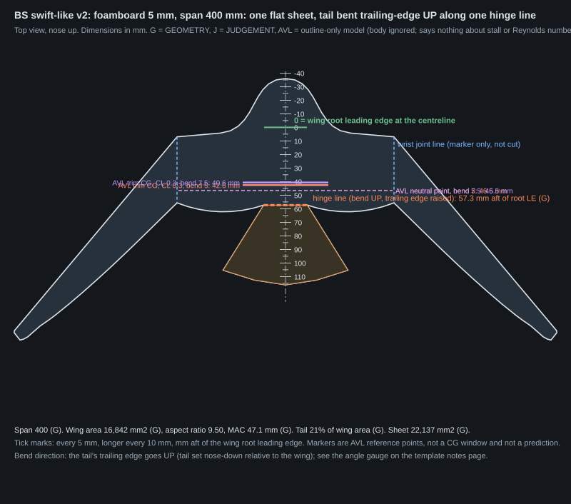
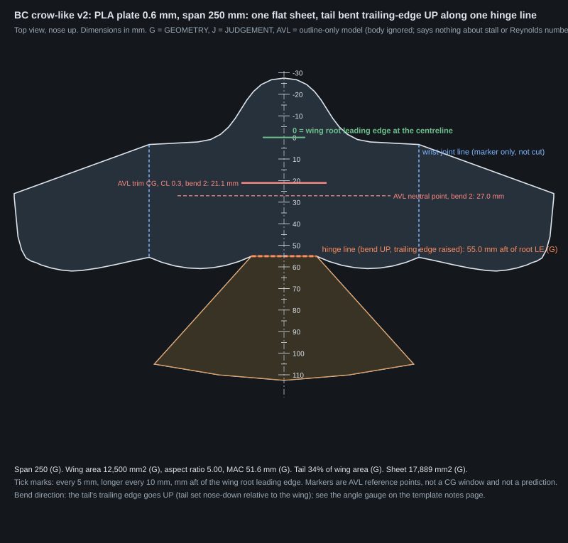
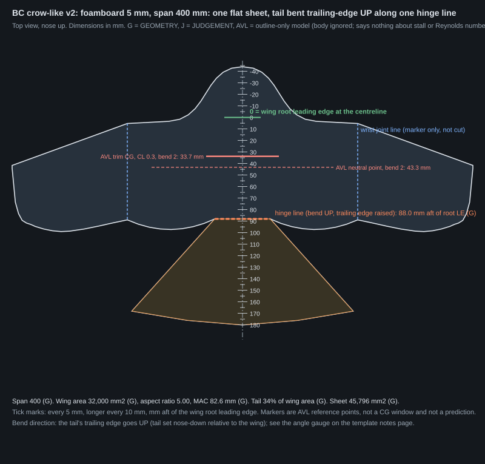

Bird-style flat glider outlines, version 2: smooth outlines, every feature backed by a modelled number
Design numbers from an outline-only computer model (AVL) and from arithmetic. Nothing here is a flight result or a prediction that a glider glides or pulls out. Tags: GEOMETRY (exact from the outline), AVL (outline-only vortex-lattice model, inviscid, body ignored), ARITHMETIC (simple sum, inputs stated), JUDGEMENT (our choice), ASSUMED (a stated guess), CITED (a number from the bird notes). AVL says nothing about flat-plate stall, the low Reynolds number or whether a build pulls out.
1. The two proposed outlines
Proposals for Kai, not decisions. They are the best outlines the search found under the criteria in section 3. Where a criterion could not be met, it is stated here and in the table below.







| BS swift-like | BC crow-like | |
|---|---|---|
| Features switched on | curved_te, root_blend, tip_round, neck, nose | curved_te, root_blend, tip_round, neck, spread, nose |
| Tail bend (trailing edge up), deg [JUDGEMENT] | 5 (also passing: 7.5) | 2 (also passing: none) |
| Fin | none | ventral fin 3% of wing area |
| Criteria not met | none | ballast 36% of all-up mass at printed size (limit 20%); ballast 33% of all-up mass at foam size (limit 20%) |
| Span 250 / 400 mm: wing area, mm² [GEOMETRY] | 6,579 / 16,842 | 12,500 / 32,000 |
| Aspect ratio b²/S [GEOMETRY] | 9.50 | 5.00 |
| MAC, mm (250 / 400) [GEOMETRY] | 29.4 / 47.1 | 51.6 / 82.6 |
| Root chord, wrist chord, mm (250) [GEOMETRY] | 35.8, 30.4 | 55.0, 52.3 |
| Hinge, mm aft of root LE (250 / 400) [GEOMETRY] | 35.8 / 57.3 | 55.0 / 88.0 |
| Tail neck width / spread / length, mm (250) [GEOMETRY] | 20.0 / 57.5 / 30.0 | 30.0 / 120.0 / 50.0 |
| Nose ahead of root LE, mm (250) [GEOMETRY] | 22.5 | 27.5 |
| Neutral point, % MAC [AVL] | 30.8 | 39.2 |
| Static margin at CL 0.3, % MAC [AVL] | 8.4 | 11.5 |
| Trim CG at CL 0.3, mm aft of root LE (250 / 400) [AVL] | 26.6 / 42.6 | 21.1 / 33.7 |
| Cn_beta, Cl_beta /rad (no fin unless stated) [AVL] | +0.0047, -0.0565 | +0.0045, -0.0127 |
| Span efficiency e, tip loading indicator [AVL] | 1.04, 1.29 (v1: 1.29) | 1.14, 0.76 (v1: 0.81) |
| All-up mass g, ballast g: printed 250 [ARITHMETIC] | 8.7, 1.1 (12%) | 23.5, 8.4 (36%) |
| All-up mass g, ballast g: foamboard 400 [ARITHMETIC] | 9.2, 0.6 (7%) | 24.9, 8.2 (33%) |
| Wing loading N/m² (250 / 400) [ARITHMETIC] | 12.9 / 5.3 | 18.4 / 7.6 |
2. Feature / what the model says it does / kept because
Each feature is switched on alone (strength 1) against the v1 outline at a 5 deg tail bend. "Helps" and "hurts" mean the quantity moves by more than the neutrality threshold (3% to 5% for AVL numbers, 1% for sheet arithmetic; AVL changes smaller than the panelling noise in section 7 are called neutral). The last column is judged in the context of the final outline (switch the feature off alone and compare). Full numbers: features_single.csv, features_strength.csv.
| family | feature | what the model says (feature alone, bend 5) | kept because |
|---|---|---|---|
| BS | m_shape M-shaped leading edge: arm swept FORWARD to the wrist, hand swept back, rounded wrist | hurts Cn_beta, no fin: 0.004464 to 0.004063 hurts Cl_beta, no fin: -0.05586 to -0.05062 hurts nose ballast / all-up mass, printed: 0.1783 to 0.3629 hurts nose ballast / all-up mass, foam 400: 0.1135 to 0.2781 hurts wing loading, printed 250 mm: 13.01 to 16.72 hurts tail neck hinge stress (n=5): 2.481 to 3.736 hurts wrist section stress (n=5): 1.861 to 2.742 neutral: 6 quantities | NOT in the final: Cn_beta, no fin 0.004464 to 0.004063; Cl_beta, no fin -0.05586 to -0.05062; tail neck hinge stress (n=5) 2.481 to 3.736 and helps nothing the model measures |
| BS | curved_te curved trailing edge: bulged arm trailing edge and smooth (cubic) hand chord distribution | helps wing loading, printed 250 mm: 13.01 to 12.86 neutral: 13 quantities | in the final. APPEARANCE ONLY (no modelled benefit) |
| BS | root_blend rounded blend between wing root and body (no hard corner) | hurts sheet area (250 mm): 7976 to 8260 hurts sheet mass, printed 250 mm: 5.934 to 6.146 helps nose ballast / all-up mass, printed: 0.1783 to 0.1529 helps nose ballast / all-up mass, foam 400: 0.1135 to 0.09181 neutral: 12 quantities | in the final. kept for a modelled benefit: nose ballast / all-up mass, printed 0.1711 to 0.1247; nose ballast / all-up mass, foam 400 0.1087 to 0.0693. Cost: sheet area (250 mm) 8182 to 8647; sheet mass, printed 250 mm 6.088 to 6.434 |
| BS | tip_round hand taper with a rounded (circular-closure) tip | changes nothing the model measures neutral: 16 quantities | in the final. kept for a modelled benefit: tip loading indicator (outer 20% cl / CL) 1.326 to 1.292 |
| BS | neck wider tail neck at the hinge (structural) | hurts tip loading indicator (outer 20% cl / CL): 1.288 to 1.322 hurts sheet area (250 mm): 7976 to 8089 hurts sheet mass, printed 250 mm: 5.934 to 6.018 hurts nose ballast / all-up mass, printed: 0.1783 to 0.1856 hurts nose ballast / all-up mass, foam 400: 0.1135 to 0.1206 hurts wing loading, printed 250 mm: 13.01 to 13.28 helps tail neck hinge stress (n=5): 2.481 to 1.478 neutral: 7 quantities | in the final. kept for a modelled benefit: tail neck hinge stress (n=5) 2.327 to 1.38. Cost: sheet area (250 mm) 8535 to 8647; sheet mass, printed 250 mm 6.35 to 6.434; wing loading, printed 250 mm 12.7 to 12.95 |
| BS | spread wider fan-tail spread | hurts tip loading indicator (outer 20% cl / CL): 1.288 to 1.34 hurts sheet area (250 mm): 7976 to 8308 hurts sheet mass, printed 250 mm: 5.934 to 6.181 hurts nose ballast / all-up mass, printed: 0.1783 to 0.2226 hurts nose ballast / all-up mass, foam 400: 0.1135 to 0.1551 hurts wing loading, printed 250 mm: 13.01 to 14.2 hurts tail neck hinge stress (n=5): 2.481 to 4.138 hurts wrist section stress (n=5): 1.861 to 2.112 neutral: 4 quantities | NOT in the final: tip loading indicator (outer 20% cl / CL) 1.288 to 1.34; tail neck hinge stress (n=5) 2.481 to 4.138; wrist section stress (n=5) 1.861 to 2.112 and helps nothing the model measures |
| BS | nose longer body / nose ahead of the wing | hurts sheet area (250 mm): 7976 to 8070 hurts sheet mass, printed 250 mm: 5.934 to 6.004 helps nose ballast / all-up mass, printed: 0.1783 to 0.168 helps nose ballast / all-up mass, foam 400: 0.1135 to 0.1046 neutral: 12 quantities | in the final. kept for a modelled benefit: nose ballast / all-up mass, printed 0.1561 to 0.1247; nose ballast / all-up mass, foam 400 0.09606 to 0.0693. Cost: sheet area (250 mm) 8373 to 8647; sheet mass, printed 250 mm 6.229 to 6.434 |
| BC | m_shape M-shaped leading edge: arm swept FORWARD to the wrist, hand swept back, rounded wrist | hurts Cn_beta, no fin: 0.001173 to 0.000674 hurts Cl_beta, no fin: -0.01064 to -0.004565 hurts nose ballast / all-up mass, printed: 0.5579 to 0.7428 hurts nose ballast / all-up mass, foam 400: 0.4981 to 0.6666 hurts wing loading, printed 250 mm: 24.41 to 41.86 hurts tail neck hinge stress (n=5): 15.96 to 28.03 hurts wrist section stress (n=5): 2.903 to 5.136 neutral: 6 quantities | NOT in the final: Cn_beta, no fin 0.001173 to 0.000674; Cl_beta, no fin -0.01064 to -0.004565; tail neck hinge stress (n=5) 15.96 to 28.03 and helps nothing the model measures |
| BC | curved_te curved trailing edge: bulged arm trailing edge and smooth (cubic) hand chord distribution | hurts nose ballast / all-up mass, foam 400: 0.4981 to 0.5215 helps wing loading, printed 250 mm: 24.41 to 23.97 neutral: 12 quantities | in the final. APPEARANCE ONLY (no modelled benefit). Modelled cost: nose ballast / all-up mass, foam 400 0.3111 to 0.3285 |
| BC | root_blend rounded blend between wing root and body (no hard corner) | hurts sheet area (250 mm): 1.601e+04 to 1.653e+04 hurts sheet mass, printed 250 mm: 11.91 to 12.3 helps nose ballast / all-up mass, foam 400: 0.4981 to 0.4876 neutral: 13 quantities | in the final. kept for a modelled benefit: nose ballast / all-up mass, printed 0.3819 to 0.3586; nose ballast / all-up mass, foam 400 0.3506 to 0.3285. Cost: sheet area (250 mm) 1.712e+04 to 1.789e+04; sheet mass, printed 250 mm 12.74 to 13.31 |
| BC | tip_round hand taper with a rounded (circular-closure) tip | changes nothing the model measures neutral: 16 quantities | in the final. APPEARANCE ONLY (no modelled benefit) |
| BC | neck wider tail neck at the hinge (structural) | hurts sheet area (250 mm): 1.601e+04 to 1.626e+04 hurts sheet mass, printed 250 mm: 11.91 to 12.1 hurts wing loading, printed 250 mm: 24.41 to 25.14 helps tail neck hinge stress (n=5): 15.96 to 10.84 neutral: 12 quantities | in the final. kept for a modelled benefit: tip loading indicator (outer 20% cl / CL) 0.8403 to 0.7638; tail neck hinge stress (n=5) 7.775 to 4.126; wrist section stress (n=5) 2.344 to 1.87; nose ballast / all-up mass, printed 0.4454 to 0.3586; nose ballast / all-up mass, foam 400 0.4152 to 0.3285. Cost: sheet area (250 mm) 1.764e+04 to 1.789e+04; sheet mass, printed 250 mm 13.12 to 13.31 |
| BC | spread wider fan-tail spread | hurts tip loading indicator (outer 20% cl / CL): 0.9169 to 0.9726 hurts sheet area (250 mm): 1.601e+04 to 1.675e+04 hurts sheet mass, printed 250 mm: 11.91 to 12.46 hurts nose ballast / all-up mass, printed: 0.5579 to 0.6503 hurts nose ballast / all-up mass, foam 400: 0.4981 to 0.5874 hurts wing loading, printed 250 mm: 24.41 to 32.07 hurts tail neck hinge stress (n=5): 15.96 to 29.72 hurts wrist section stress (n=5): 2.903 to 4.043 neutral: 5 quantities | in the final. kept for a modelled benefit: tip loading indicator (outer 20% cl / CL) 0.8162 to 0.7638; nose ballast / all-up mass, printed 0.4024 to 0.3586; nose ballast / all-up mass, foam 400 0.3724 to 0.3285. Cost: sheet area (250 mm) 1.715e+04 to 1.789e+04; sheet mass, printed 250 mm 12.76 to 13.31; tail neck hinge stress (n=5) 3.275 to 4.126 |
| BC | nose longer body / nose ahead of the wing | changes nothing the model measures neutral: 16 quantities | in the final. kept for a modelled benefit: nose ballast / all-up mass, printed 0.3716 to 0.3586; nose ballast / all-up mass, foam 400 0.3409 to 0.3285. Cost: sheet area (250 mm) 1.752e+04 to 1.789e+04; sheet mass, printed 250 mm 13.03 to 13.31 |
3. How the final outlines were chosen (criteria, not looks)
- Cn_beta at least 0.004 per rad with no fin; if no outline reaches it, the smallest ventral fin (3% then 5% of wing area) that does. [JUDGEMENT]
- Cl_beta at most -0.005 per rad (the stable sign, with a floor). [JUDGEMENT]
- Static margin at CL 0.3 between 8 and 15% of MAC with the chosen bend. [JUDGEMENT]
- Trim CG at CL 0.3 at least 3 mm (250 mm span; same fraction at 400) behind the nose tip, and reachable with the new rail's ballast holes. [JUDGEMENT]
- Nose ballast below 20% of the all-up mass at both sizes. [JUDGEMENT]
- Tip loading indicator not above the v1 value at the same bend (1% tolerance). The indicator is the area-weighted local lift coefficient of the outer 20% of the semi-span divided by the wing CL; it is NOT a stall prediction.
- Tail neck at least the larger of the width that keeps the hinge-strip stress below 20/2 MPa at load factor 5 and 4% of the span (beam arithmetic, section 6). [ARITHMETIC]
- Features with no modelled benefit (appearance only) may add at most 4% to the all-up mass. [JUDGEMENT]
Ranking among outlines that pass: fewest fins, then the most outline features switched on (Kai asked for a bird-like outline: a JUDGEMENT tie-break that comes only after every criterion is met), then the largest smallest-margin to the thresholds, then the smallest sheet area. Screening used AVL at bends 0 and 5 and the model's linearity in tail incidence to reach bends 2, 3, 7.5 and 10; the best screened outlines were re-run exactly at their own bend and re-checked.
BS swift-like: 640 candidates (feature combinations x 5 bends)
54 passed screening with nothing waived. Failures counted per criterion (a candidate can fail several): ballast: 771, static: 400, tip: 296, Cn_beta: 208, tail: 48.
Closest failing candidates and the v1 outline at each bend (exact AVL), with the reasons:
| features on | bend | stage | criteria failed |
|---|---|---|---|
| none (v1 outline) | 2 | exact | Cn_beta +0.0037 below 0.004 /rad (no fin) | static margin at CL 0.3 3.9% outside 8-15% MAC |
| none (v1 outline) | 3 | exact | Cn_beta +0.0039 below 0.004 /rad (no fin) | static margin at CL 0.3 5.8% outside 8-15% MAC |
| none (v1 outline) | 5 | exact | passes |
| none (v1 outline) | 7.5 | exact | ballast 22% of all-up mass at printed size (limit 20%) |
| none (v1 outline) | 10 | exact | static margin at CL 0.3 19.5% outside 8-15% MAC | ballast 26% of all-up mass at printed size (limit 20%) |
BC crow-like: 640 candidates (feature combinations x 5 bends)
0 passed screening with nothing waived. Failures counted per criterion (a candidate can fail several): ballast: 1280, Cn_beta: 640, static: 480, tail: 434, tip: 292, Cl_beta: 200, trim CG: 110, appearance-only: 24.
No candidate met every criterion. The ballast limit was waived to find the closest outline; the final fails it as shown in section 1. Reason, in the model: the bent fan tail and the wide planform put the sheet's own CG far behind the CG the static margin needs, so the difference must be ballast. For the final at 250 mm the bare CG is 39.9 mm and the trim CG 21.1 mm aft of the root LE; to stay under 20% ballast at the rail's ballast hole (-12.5 mm) the bare CG would have to be at or ahead of 29.5 mm [ARITHMETIC].
Closest failing candidates and the v1 outline at each bend (exact AVL), with the reasons:
| features on | bend | stage | criteria failed |
|---|---|---|---|
| root_blend+neck+spread+nose | 2 | screening | Cn_beta +0.0010 below 0.004 /rad (no fin) | ballast 36% of all-up mass at printed size (limit 20%) | ballast 31% of all-up mass at foam size (limit 20%) |
| curved_te+root_blend+neck+spread+nose | 2 | screening | Cn_beta +0.0009 below 0.004 /rad (no fin) | ballast 36% of all-up mass at printed size (limit 20%) | ballast 33% of all-up mass at foam size (limit 20%) |
| root_blend+tip_round+neck+spread+nose | 2 | screening | Cn_beta +0.0009 below 0.004 /rad (no fin) | ballast 36% of all-up mass at printed size (limit 20%) | ballast 31% of all-up mass at foam size (limit 20%) |
| curved_te+root_blend+tip_round+neck+spread+nose | 2 | screening | Cn_beta +0.0009 below 0.004 /rad (no fin) | ballast 36% of all-up mass at printed size (limit 20%) | ballast 33% of all-up mass at foam size (limit 20%) |
| root_blend+neck+spread | 2 | screening | Cn_beta +0.0010 below 0.004 /rad (no fin) | ballast 37% of all-up mass at printed size (limit 20%) | ballast 32% of all-up mass at foam size (limit 20%) |
| root_blend+tip_round+neck+spread | 2 | screening | Cn_beta +0.0009 below 0.004 /rad (no fin) | ballast 37% of all-up mass at printed size (limit 20%) | ballast 32% of all-up mass at foam size (limit 20%) |
| none (v1 outline) | 2 | exact | Cn_beta +0.0009 below 0.004 /rad (no fin) | ballast 42% of all-up mass at printed size (limit 20%) | ballast 37% of all-up mass at foam size (limit 20%) |
| none (v1 outline) | 3 | exact | Cn_beta +0.0010 below 0.004 /rad (no fin) | ballast 47% of all-up mass at printed size (limit 20%) | ballast 41% of all-up mass at foam size (limit 20%) |
| none (v1 outline) | 5 | exact | Cn_beta +0.0012 below 0.004 /rad (no fin) | static margin at CL 0.3 23.0% outside 8-15% MAC | ballast 56% of all-up mass at printed size (limit 20%) | ballast 50% of all-up mass at foam size (limit 20%) | tail neck narrower than the structural minimum |
| none (v1 outline) | 7.5 | exact | Cn_beta +0.0015 below 0.004 /rad (no fin) | static margin at CL 0.3 34.5% outside 8-15% MAC | ballast 67% of all-up mass at printed size (limit 20%) | ballast 60% of all-up mass at foam size (limit 20%) | tail neck narrower than the structural minimum |
| none (v1 outline) | 10 | exact | Cn_beta +0.0018 below 0.004 /rad (no fin) | static margin at CL 0.3 46.2% outside 8-15% MAC | ballast 78% of all-up mass at printed size (limit 20%) | ballast 71% of all-up mass at foam size (limit 20%) | tail neck narrower than the structural minimum |
Every candidate with its verdict: selection.csv.
4. Interactions of the features that matter most
Ranked by the size of their combined change in Cn_beta, Cl_beta, span efficiency, tip loading, static margin and neutral point. Combined change minus the sum of the single changes is the interaction (AVL, bend 5).
BS: top features spread, m_shape, neck
| features | quantity | v1 | sum of single changes | combined change | interaction |
|---|---|---|---|---|---|
| spread+m_shape | np_pct_mac | 32.3 | +2.968 | +3.536 | +0.5685 |
| spread+m_shape | sm03 | 0.09701 | +0.1005 | +0.1211 | +0.02061 |
| spread+m_shape | cn_beta | 0.004464 | -3e-05 | -6.6e-05 | -3.6e-05 |
| spread+m_shape | cl_beta | -0.05586 | +0.00355 | +0.003668 | +0.000118 |
| spread+m_shape | span_eff | 1.015 | +0.06321 | +0.08936 | +0.02615 |
| spread+neck | np_pct_mac | 32.3 | +1.191 | +2.691 | +1.499 |
| spread+neck | sm03 | 0.09701 | +0.04511 | +0.04264 | -0.002476 |
| spread+neck | cn_beta | 0.004464 | +0.000598 | +0.000295 | -0.000303 |
| spread+neck | cl_beta | -0.05586 | -0.002637 | -0.001093 | +0.001544 |
| spread+neck | span_eff | 1.015 | +0.09442 | -0.000271 | -0.09469 |
| m_shape+neck | np_pct_mac | 32.3 | -0.08161 | -0.7529 | -0.6713 |
| m_shape+neck | sm03 | 0.09701 | +0.04493 | +0.04568 | +0.0007541 |
| m_shape+neck | cn_beta | 0.004464 | -0.000174 | -0.000207 | -3.3e-05 |
| m_shape+neck | cl_beta | -0.05586 | +0.004279 | +0.004596 | +0.000317 |
| m_shape+neck | span_eff | 1.015 | +0.0383 | +0.05819 | +0.01989 |
| spread+m_shape+neck | np_pct_mac | 32.3 | +2.038 | +4.56 | +2.522 |
| spread+m_shape+neck | sm03 | 0.09701 | +0.09526 | +0.1123 | +0.01699 |
| spread+m_shape+neck | cn_beta | 0.004464 | +0.000197 | -0.000149 | -0.000346 |
| spread+m_shape+neck | cl_beta | -0.05586 | +0.002596 | +0.004472 | +0.001876 |
| spread+m_shape+neck | span_eff | 1.015 | +0.09797 | +0.01097 | -0.087 |
BC: top features m_shape, spread, curved_te
| features | quantity | v1 | sum of single changes | combined change | interaction |
|---|---|---|---|---|---|
| m_shape+spread | np_pct_mac | 30.53 | +2.333 | +2.878 | +0.5442 |
| m_shape+spread | sm03 | 0.2297 | +0.1301 | +0.1441 | +0.01391 |
| m_shape+spread | cn_beta | 0.001173 | -0.00048 | -0.000525 | -4.5e-05 |
| m_shape+spread | cl_beta | -0.01064 | +0.006727 | +0.006948 | +0.000221 |
| m_shape+spread | span_eff | 0.9604 | +0.0867 | +0.1141 | +0.02739 |
| m_shape+curved_te | np_pct_mac | 30.53 | +0.7057 | +0.5768 | -0.1289 |
| m_shape+curved_te | sm03 | 0.2297 | +0.02887 | +0.02847 | -0.0003941 |
| m_shape+curved_te | cn_beta | 0.001173 | -0.000551 | -0.000556 | -5e-06 |
| m_shape+curved_te | cl_beta | -0.01064 | +0.006512 | +0.006562 | +5e-05 |
| m_shape+curved_te | span_eff | 0.9604 | +0.02032 | +0.02034 | +2.074e-05 |
| spread+curved_te | np_pct_mac | 30.53 | +0.8041 | +0.5783 | -0.2258 |
| spread+curved_te | sm03 | 0.2297 | +0.08468 | +0.08158 | -0.003105 |
| spread+curved_te | cn_beta | 0.001173 | -3.3e-05 | -3.4e-05 | -1e-06 |
| spread+curved_te | cl_beta | -0.01064 | +0.001079 | +0.001107 | +2.8e-05 |
| spread+curved_te | span_eff | 0.9604 | +0.07573 | +0.08507 | +0.009341 |
| m_shape+spread+curved_te | np_pct_mac | 30.53 | +1.922 | +2.092 | +0.17 |
| m_shape+spread+curved_te | sm03 | 0.2297 | +0.1218 | +0.1322 | +0.01035 |
| m_shape+spread+curved_te | cn_beta | 0.001173 | -0.000532 | -0.000587 | -5.5e-05 |
| m_shape+spread+curved_te | cl_beta | -0.01064 | +0.007159 | +0.007471 | +0.000312 |
| m_shape+spread+curved_te | span_eff | 0.9604 | +0.09137 | +0.1289 | +0.0375 |
All quantities: interactions.csv.
5. The final outlines at every tail bend, and the yaw options
Bends 0, 2, 3, 5, 7.5, 10 deg, trailing edge up. Exact AVL at every bend [AVL]. Bend 0 has no nose-up moment at zero lift.
BS swift-like
| outline | bend | NP % MAC | CM0 | trim CG CL 0.3, mm (250) | SM CL 0.3, % | Cn_beta | Cl_beta | span eff. | tip loading | ballast 250 / 400 | passes |
|---|---|---|---|---|---|---|---|---|---|---|---|
| v1 | 0 | 32.2 | -0.0000 | 29.5 | -0.0 | +0.0032 | -0.0496 | 0.97 | 1.09 | 10% / 4% | no |
| v1 | 2 | 32.2 | +0.0116 | 28.4 | 3.9 | +0.0037 | -0.0521 | 1.07 | 1.17 | 13% / 7% | no |
| v1 | 3 | 32.3 | +0.0174 | 27.8 | 5.8 | +0.0039 | -0.0533 | 1.08 | 1.21 | 15% / 8% | no |
| v1 | 5 | 32.3 | +0.0291 | 26.7 | 9.7 | +0.0045 | -0.0559 | 1.02 | 1.29 | 18% / 11% | yes |
| v1 | 7.5 | 32.3 | +0.0438 | 25.2 | 14.6 | +0.0052 | -0.0590 | 0.82 | 1.39 | 22% / 15% | no |
| v1 | 10 | 32.4 | +0.0586 | 23.8 | 19.5 | +0.0060 | -0.0622 | 0.62 | 1.49 | 26% / 19% | no |
| final | 0 | 30.8 | -0.0000 | 29.1 | -0.0 | +0.0033 | -0.0499 | 0.96 | 1.08 | 5% / 0% | no |
| final | 2 | 30.8 | +0.0100 | 28.1 | 3.3 | +0.0038 | -0.0525 | 1.08 | 1.17 | 8% / 3% | no |
| final | 3 | 30.8 | +0.0151 | 27.6 | 5.0 | +0.0041 | -0.0538 | 1.10 | 1.21 | 10% / 4% | no |
| final | 5 | 30.8 | +0.0251 | 26.6 | 8.4 | +0.0047 | -0.0565 | 1.04 | 1.29 | 12% / 7% | yes |
| final | 7.5 | 30.9 | +0.0378 | 25.4 | 12.6 | +0.0055 | -0.0598 | 0.84 | 1.40 | 16% / 10% | yes |
| final | 10 | 30.9 | +0.0506 | 24.1 | 16.9 | +0.0064 | -0.0631 | 0.63 | 1.50 | 20% / 14% | no |
BS: yaw options (no fin / ventral fin / tail side edges bent up as small fins)
| outline | bend | option | Cn_beta | Cl_beta | NP % MAC | CM0 | Cn_beta >= 0.004 | Cl_beta <= -0.005 |
|---|---|---|---|---|---|---|---|---|
| v1 | 5 | none | +0.0045 | -0.0559 | 32.3 | +0.0291 | yes | yes |
| v1 | 5 | ventral fin 3% | +0.0063 | -0.0564 | 32.3 | +0.0291 | yes | yes |
| v1 | 5 | ventral fin 5% | +0.0096 | -0.0556 | 32.3 | +0.0291 | yes | yes |
| v1 | 5 | tail edges up 30 deg | +0.0058 | -0.0583 | 32.5 | +0.0280 | yes | yes |
| v1 | 5 | tail edges up 60 deg | +0.0084 | -0.0587 | 32.0 | +0.0258 | yes | yes |
| final | 0 | none | +0.0033 | -0.0499 | 30.8 | -0.0000 | no | yes |
| final | 0 | ventral fin 3% | +0.0050 | -0.0505 | 30.8 | -0.0000 | yes | yes |
| final | 0 | ventral fin 5% | +0.0079 | -0.0498 | 30.8 | -0.0000 | yes | yes |
| final | 0 | tail edges up 30 deg | +0.0046 | -0.0528 | 30.7 | -0.0000 | yes | yes |
| final | 0 | tail edges up 60 deg | +0.0073 | -0.0537 | 30.3 | -0.0000 | yes | yes |
| final | 2 | none | +0.0038 | -0.0525 | 30.8 | +0.0100 | no | yes |
| final | 2 | ventral fin 3% | +0.0055 | -0.0531 | 30.8 | +0.0100 | yes | yes |
| final | 2 | ventral fin 5% | +0.0084 | -0.0525 | 30.8 | +0.0100 | yes | yes |
| final | 2 | tail edges up 30 deg | +0.0051 | -0.0554 | 30.7 | +0.0097 | yes | yes |
| final | 2 | tail edges up 60 deg | +0.0078 | -0.0561 | 30.3 | +0.0090 | yes | yes |
| final | 3 | none | +0.0041 | -0.0538 | 30.8 | +0.0151 | yes | yes |
| final | 3 | ventral fin 3% | +0.0058 | -0.0545 | 30.8 | +0.0151 | yes | yes |
| final | 3 | ventral fin 5% | +0.0087 | -0.0538 | 30.8 | +0.0151 | yes | yes |
| final | 3 | tail edges up 30 deg | +0.0054 | -0.0567 | 30.7 | +0.0146 | yes | yes |
| final | 3 | tail edges up 60 deg | +0.0081 | -0.0573 | 30.3 | +0.0134 | yes | yes |
| final | 5 | none | +0.0047 | -0.0565 | 30.8 | +0.0251 | yes | yes |
| final | 5 | ventral fin 3% | +0.0064 | -0.0571 | 30.8 | +0.0251 | yes | yes |
| final | 5 | ventral fin 5% | +0.0094 | -0.0565 | 30.8 | +0.0251 | yes | yes |
| final | 5 | tail edges up 30 deg | +0.0060 | -0.0593 | 30.7 | +0.0242 | yes | yes |
| final | 5 | tail edges up 60 deg | +0.0087 | -0.0597 | 30.3 | +0.0221 | yes | yes |
| final | 7.5 | none | +0.0055 | -0.0598 | 30.9 | +0.0378 | yes | yes |
| final | 7.5 | ventral fin 3% | +0.0073 | -0.0605 | 30.9 | +0.0378 | yes | yes |
| final | 7.5 | ventral fin 5% | +0.0102 | -0.0598 | 30.9 | +0.0378 | yes | yes |
| final | 7.5 | tail edges up 30 deg | +0.0069 | -0.0625 | 30.7 | +0.0361 | yes | yes |
| final | 7.5 | tail edges up 60 deg | +0.0095 | -0.0627 | 30.3 | +0.0327 | yes | yes |
| final | 10 | none | +0.0064 | -0.0631 | 30.9 | +0.0506 | yes | yes |
| final | 10 | ventral fin 3% | +0.0082 | -0.0638 | 30.9 | +0.0506 | yes | yes |
| final | 10 | ventral fin 5% | +0.0112 | -0.0631 | 30.9 | +0.0506 | yes | yes |
| final | 10 | tail edges up 30 deg | +0.0078 | -0.0657 | 30.7 | +0.0479 | yes | yes |
| final | 10 | tail edges up 60 deg | +0.0104 | -0.0656 | 30.2 | +0.0431 | yes | yes |
BC crow-like
| outline | bend | NP % MAC | CM0 | trim CG CL 0.3, mm (250) | SM CL 0.3, % | Cn_beta | Cl_beta | span eff. | tip loading | ballast 250 / 400 | passes |
|---|---|---|---|---|---|---|---|---|---|---|---|
| v1 | 0 | 30.3 | -0.0000 | 22.5 | -0.0 | +0.0009 | -0.0127 | 1.02 | 0.75 | 33% / 29% | no |
| v1 | 2 | 30.4 | +0.0275 | 17.8 | 9.2 | +0.0009 | -0.0119 | 1.05 | 0.81 | 42% / 37% | no |
| v1 | 3 | 30.4 | +0.0413 | 15.5 | 13.8 | +0.0010 | -0.0115 | 1.04 | 0.85 | 47% / 41% | no |
| v1 | 5 | 30.5 | +0.0689 | 10.8 | 23.0 | +0.0012 | -0.0106 | 0.96 | 0.92 | 56% / 50% | no |
| v1 | 7.5 | 30.7 | +0.1035 | 4.9 | 34.5 | +0.0015 | -0.0096 | 0.81 | 1.00 | 67% / 60% | no |
| v1 | 10 | 30.8 | +0.1385 | -1.0 | 46.2 | +0.0018 | -0.0085 | 0.65 | 1.09 | 78% / 71% | no |
| final | 0 | 39.1 | -0.0001 | 27.0 | -0.0 | +0.0044 | -0.0139 | 1.14 | 0.68 | 25% / 21% | no |
| final | 2 | 39.2 | +0.0345 | 21.1 | 11.5 | +0.0045 | -0.0127 | 1.14 | 0.76 | 36% / 33% | yes |
| final | 3 | 39.2 | +0.0518 | 18.1 | 17.3 | +0.0046 | -0.0121 | 1.10 | 0.81 | 42% / 38% | no |
| final | 5 | 39.3 | +0.0864 | 12.2 | 28.8 | +0.0048 | -0.0108 | 0.96 | 0.90 | 53% / 50% | no |
| final | 7.5 | 39.5 | +0.1299 | 4.8 | 43.3 | +0.0051 | -0.0092 | 0.75 | 1.01 | 67% / 64% | no |
| final | 10 | 39.6 | +0.1736 | -2.6 | 57.9 | +0.0055 | -0.0076 | 0.57 | 1.12 | 81% / 78% | no |
BC: yaw options (no fin / ventral fin / tail side edges bent up as small fins)
| outline | bend | option | Cn_beta | Cl_beta | NP % MAC | CM0 | Cn_beta >= 0.004 | Cl_beta <= -0.005 |
|---|---|---|---|---|---|---|---|---|
| v1 | 5 | none | +0.0012 | -0.0106 | 30.5 | +0.0689 | no | yes |
| v1 | 5 | ventral fin 3% | +0.0051 | -0.0113 | 30.5 | +0.0689 | yes | yes |
| v1 | 5 | ventral fin 5% | +0.0122 | -0.0108 | 30.5 | +0.0689 | yes | yes |
| v1 | 5 | tail edges up 30 deg | +0.0053 | -0.0159 | 30.0 | +0.0672 | yes | yes |
| v1 | 5 | tail edges up 60 deg | +0.0138 | -0.0170 | 29.2 | +0.0632 | yes | yes |
| final | 0 | none | +0.0008 | -0.0129 | 39.1 | -0.0001 | no | yes |
| final | 0 | ventral fin 3% | +0.0044 | -0.0139 | 39.1 | -0.0001 | yes | yes |
| final | 0 | ventral fin 5% | +0.0109 | -0.0140 | 39.1 | -0.0001 | yes | yes |
| final | 0 | tail edges up 30 deg | +0.0065 | -0.0236 | 39.1 | +0.0001 | yes | yes |
| final | 0 | tail edges up 60 deg | +0.0193 | -0.0268 | 38.7 | +0.0002 | yes | yes |
| final | 2 | none | +0.0009 | -0.0117 | 39.2 | +0.0345 | no | yes |
| final | 2 | ventral fin 3% | +0.0045 | -0.0127 | 39.2 | +0.0345 | yes | yes |
| final | 2 | ventral fin 5% | +0.0110 | -0.0128 | 39.2 | +0.0345 | yes | yes |
| final | 2 | tail edges up 30 deg | +0.0067 | -0.0222 | 39.1 | +0.0340 | yes | yes |
| final | 2 | tail edges up 60 deg | +0.0194 | -0.0252 | 38.5 | +0.0322 | yes | yes |
| final | 3 | none | +0.0009 | -0.0110 | 39.2 | +0.0518 | no | yes |
| final | 3 | ventral fin 3% | +0.0046 | -0.0121 | 39.2 | +0.0518 | yes | yes |
| final | 3 | ventral fin 5% | +0.0111 | -0.0122 | 39.2 | +0.0518 | yes | yes |
| final | 3 | tail edges up 30 deg | +0.0069 | -0.0215 | 39.0 | +0.0509 | yes | yes |
| final | 3 | tail edges up 60 deg | +0.0195 | -0.0244 | 38.4 | +0.0481 | yes | yes |
| final | 5 | none | +0.0011 | -0.0097 | 39.3 | +0.0864 | no | yes |
| final | 5 | ventral fin 3% | +0.0048 | -0.0108 | 39.3 | +0.0864 | yes | yes |
| final | 5 | ventral fin 5% | +0.0114 | -0.0109 | 39.3 | +0.0864 | yes | yes |
| final | 5 | tail edges up 30 deg | +0.0071 | -0.0201 | 39.0 | +0.0845 | yes | yes |
| final | 5 | tail edges up 60 deg | +0.0197 | -0.0228 | 38.3 | +0.0796 | yes | yes |
| final | 7.5 | none | +0.0014 | -0.0081 | 39.5 | +0.1299 | no | yes |
| final | 7.5 | ventral fin 3% | +0.0051 | -0.0092 | 39.5 | +0.1299 | yes | yes |
| final | 7.5 | ventral fin 5% | +0.0117 | -0.0093 | 39.5 | +0.1299 | yes | yes |
| final | 7.5 | tail edges up 30 deg | +0.0076 | -0.0183 | 38.9 | +0.1265 | yes | yes |
| final | 7.5 | tail edges up 60 deg | +0.0200 | -0.0207 | 38.1 | +0.1187 | yes | yes |
| final | 10 | none | +0.0018 | -0.0065 | 39.6 | +0.1736 | no | yes |
| final | 10 | ventral fin 3% | +0.0055 | -0.0076 | 39.6 | +0.1736 | yes | yes |
| final | 10 | ventral fin 5% | +0.0122 | -0.0076 | 39.6 | +0.1736 | yes | yes |
| final | 10 | tail edges up 30 deg | +0.0081 | -0.0165 | 38.9 | +0.1685 | yes | yes |
| final | 10 | tail edges up 60 deg | +0.0204 | -0.0187 | 37.9 | +0.1576 | yes | yes |
BS: a fin-free alternative. Bending the outer 30% of each side of the fan up (no extra part, no added area) reaches Cn_beta of +0.0060 at 30 deg, +0.0087 at 60 deg at the final bend of 5 deg, with Cl_beta -0.0593, -0.0597. The selection rule only walked the ventral-fin ladder (3% then 5% of wing area), so this is listed, not chosen: whether to fold the edges is for Kai [AVL].
BC: a fin-free alternative. Bending the outer 30% of each side of the fan up (no extra part, no added area) reaches Cn_beta of +0.0067 at 30 deg, +0.0194 at 60 deg at the final bend of 2 deg, with Cl_beta -0.0222, -0.0252. The selection rule only walked the ventral-fin ladder (3% then 5% of wing area), so this is listed, not chosen: whether to fold the edges is for Kai [AVL].
Tail-edge fins are modelled as dihedral panels: the outer 30% of each half of the fan, bent up about a chordwise line. Ventral fin chord is 0.6 tail lengths under the tail. Full table: yaw.csv, bends.csv.
6. Builds, masses, rails and structure
| build | bend | sheet g | rail g | bare CG mm | trim CG mm | ballast g | all-up g | W/S N/m² | pull-out R m (CL 0.3 / 0.5) | rail saddle end, mm | rail ticks, mm | ticks cover all trim CGs? | rail nose beyond sheet nose, mm | stress MPa at n=5 and hinge strain % (printed only) |
|---|---|---|---|---|---|---|---|---|---|---|---|---|---|---|
| BS printed 250 | 5 | 6.44 | 1.17 | 30.8 | 26.6 | 1.08 at -2.5 mm | 8.69 | 13.0 | 7.2 / 4.3 | 32.8 vs hinge 35.8 | 15 to 31 | yes | -9.4 | 1.4 (min neck 10.0 mm, have 20.0); wrist 2.0; hinge strain 1.7% (limit 3% ASSUMED) |
| BS printed 250 | 7.5 | 6.44 | 1.16 | 30.8 | 25.4 | 1.47 at -2.5 mm | 9.07 | 13.5 | 7.5 / 4.5 | 32.8 vs hinge 35.8 | 15 to 31 | yes | -9.4 | 2.2 (min neck 10.0 mm, have 20.0); wrist 2.2; hinge strain 2.6% (limit 3% ASSUMED) |
| BS foam 400 | 5 | 6.64 | 1.90 | 46.7 | 42.6 | 0.64 at -12.5 mm | 9.18 | 5.3 | 3.0 / 1.8 | 54.3 vs hinge 57.3 | 30 to 50 | yes | -14.3 | UNKNOWN |
| BS foam 400 | 7.5 | 6.64 | 1.89 | 46.7 | 40.6 | 0.98 at -12.5 mm | 9.50 | 5.5 | 3.1 / 1.8 | 54.3 vs hinge 57.3 | 30 to 50 | yes | -14.3 | UNKNOWN |
| BC printed 250 | 2 | 13.31 | 1.77 | 39.9 | 21.1 | 8.43 at -12.5 mm | 23.52 | 18.5 | 10.2 / 6.1 | 52.0 vs hinge 55.0 | 10 to 30 | yes | -6.7 | 4.1 (min neck 12.4 mm, have 30.0); wrist 1.9; hinge strain 0.7% (limit 3% ASSUMED) |
| BC foam 400 | 2 | 13.74 | 2.96 | 61.3 | 33.7 | 8.17 at -22.5 mm | 24.87 | 7.6 | 4.2 / 2.5 | 85.0 vs hinge 88.0 | 20 to 45 | yes | -10.0 | UNKNOWN |
Sheet mass: printed = mesh volume x PLA density, foamboard = area x areal mass (both ASSUMED in flat_test.py). New rails are made for each outline: the saddle ends 3 mm ahead of the hinge so it cannot stiffen the bend, the ticks run 5 mm beyond the lowest and highest trim CG of all proposed bends and CL 0.2 to 0.5, and the hole, notch and tick conventions are those of the flat-test rails (flat_test.stick_mesh). Ballast goes in the rail hole nearest 75% of the nose length, or the most forward hole that is ahead of the target. Pull-out radius R = 2 (W/S) / (rho g CL), steady circular pull-up, load factor much greater than 1, air density 1.225 ASSUMED; it says nothing about whether the glider pulls out [ARITHMETIC].
Beam arithmetic for the printed sheet
Loads at load factor 5 [JUDGEMENT]. Tail neck: the 0.4 mm hinge strip (two layers; v1 used 0.2 mm, which the beam arithmetic rejects for the crow-like tail at load factor 5) across the neck width is a cantilever carrying the tail force that balances CM0 at zero wing lift (|CM0| x MAC / (0.3 x lever) x weight, lever = tail centroid aft of the CM reference point; the AVL tail-lift fraction is not used because it moves by tens of per cent with the panelling, see section 7) at the tail centroid, sigma = 6 M / (w t²). Wrist: the outer panel is a cantilever about the wrist, with moment from the AVL strip loads, over the local chord at the wrist and the 0.6 mm plate, sigma = 6 M / (c t²). Allowable 20 MPa across print layers [ASSUMED] with a safety factor 2. The tail neck minimum is the larger of the stress-based width and 4% of the span. Foamboard stiffness: UNKNOWN (sandwich), not computed. This is a screening number, not a strength test; the real hinge may be worse (layer adhesion, a crease that has been bent more than once).
Thinner sheet for the 400 mm foamboard, BS: the 5 mm board is 10.6% of the MAC. A sheet of about 2.8 mm would be 6% of the MAC (JUDGEMENT target). If the areal mass scaled with thickness (ASSUMED, not true for a board with paper skins), the sheet would weigh 3.8 g and the all-up mass would be 6.1 g with 0.5 g of ballast at bend 5.
Thinner sheet for the 400 mm foamboard, BC: the 5 mm board is 6.1% of the MAC. A sheet of about 5.0 mm would be 6% of the MAC (JUDGEMENT target). If the areal mass scaled with thickness (ASSUMED, not true for a board with paper skins), the sheet would weigh 13.6 g and the all-up mass would be 24.7 g with 8.1 g of ballast at bend 2.
7. What came from the bird notes, what did not, and how reliable the AVL numbers are
From the bird notes (CITED)
- BS aspect ratio 9.5 (common swift b²/S, paper value 9.8) [R2]. BS tail spread 0.23 of the span (0.09 m tail span over 0.39 m wing span at 7 m/s; the bird furls it to 0.04 m at 11 m/s) [R2].
- BC aspect ratio 5.0 (magpie 4.97, jackdaw about 6) [R9, R2].
No planform data in the notes (all JUDGEMENT)
The notes give no arm/hand split, no leading-edge angles, no chord distribution, no trailing-edge shape, no body or neck width, no tail length and no root blend. The M-shaped leading edge, the curved trailing edge, the tip rounding, the wrist blend radius, the neck width and the root blend are therefore our own parameters, chosen only to be switched on and off and costed. Nothing is traced from a bird image. The notes also say birds were not shown to be passively stable, that the tail is not shown to stabilise a bird, and that sweep costs lift-to-drag ratio on simple plates; none of that is relied on here.
AVL panelling check
The tail sits in the wing's own wake plane, so AVL results depend a little on the panelling. The same outline at three panel counts (this run uses 10 chordwise x 80 spanwise per half wing):
| family | outline | bend | chordwise x spanwise | NP % MAC | CM0 | Cn_beta | Cl_beta | span eff. | tail lift / weight | wrist moment / weight, m |
|---|---|---|---|---|---|---|---|---|---|---|
| BS | v1 | 5 | 8 x 64 | 32.3 | +0.0291 | +0.0045 | -0.0562 | 0.98 | -0.086 | 0.0083 |
| BS | v1 | 5 | 10 x 80 | 32.3 | +0.0291 | +0.0045 | -0.0559 | 1.02 | -0.082 | 0.0083 |
| BS | v1 | 5 | 16 x 128 | 31.9 | +0.0292 | +0.0045 | -0.0562 | 0.98 | -0.088 | 0.0083 |
| BS | final | 5 | 8 x 64 | 30.8 | +0.0251 | +0.0047 | -0.0566 | 1.07 | -0.102 | 0.0084 |
| BS | final | 5 | 10 x 80 | 30.8 | +0.0251 | +0.0047 | -0.0565 | 1.04 | -0.100 | 0.0084 |
| BS | final | 5 | 16 x 128 | 31.6 | +0.0249 | +0.0045 | -0.0557 | 0.94 | -0.085 | 0.0083 |
| BC | v1 | 2 | 8 x 64 | 32.2 | +0.0272 | +0.0009 | -0.0119 | 1.14 | +0.002 | 0.0054 |
| BC | v1 | 2 | 10 x 80 | 30.4 | +0.0275 | +0.0009 | -0.0119 | 1.05 | -0.015 | 0.0055 |
| BC | v1 | 2 | 16 x 128 | 28.4 | +0.0279 | +0.0009 | -0.0117 | 1.02 | -0.029 | 0.0055 |
| BC | final | 2 | 8 x 64 | 33.9 | +0.0362 | +0.0009 | -0.0112 | 1.01 | -0.013 | 0.0054 |
| BC | final | 2 | 10 x 80 | 39.2 | +0.0345 | +0.0009 | -0.0117 | 1.14 | +0.038 | 0.0051 |
| BC | final | 2 | 16 x 128 | 34.2 | +0.0360 | +0.0009 | -0.0111 | 1.02 | -0.006 | 0.0053 |
Cn_beta, Cl_beta and CM0 agree within a few per cent across the panellings; the neutral point, span efficiency and the AVL tail-lift fraction do not (the tail lies in the wing's own wake plane, so its load depends on how the lattices line up). Read span efficiency and the tip loading indicator as trends only; the neutrality thresholds for them in section 2 are set above the spread seen here. The v2 deck is finer than the v1 deck, so v1 numbers quoted here are re-runs in the v2 deck; they differ from the v1 page by a few per cent.
8. Files
- BS PLA plate 250 mm: drawing.svg, parts.dxf, rail.stl (new CG rail), sheet.stl (flat, scored hinge: one 0.4 mm strip, 1 mm wide; three overlapping closed shells), templates: template_page1.svg, template_page2.svg
- BS foamboard 400 mm: drawing.svg, parts.dxf, rail.stl (new CG rail), templates: template_page1.svg, template_page2.svg, template_page3.svg
- BC PLA plate 250 mm: drawing.svg, parts.dxf, rail.stl (new CG rail), sheet.stl (flat, scored hinge: one 0.4 mm strip, 1 mm wide; three overlapping closed shells), templates: template_page1.svg, template_page2.svg
- BC foamboard 400 mm: drawing.svg, parts.dxf, rail.stl (new CG rail), templates: template_page1.svg, template_page2.svg, template_page3.svg


Print templates, 1:1 US Letter, white, all builds: bird_v2_templates.pdf (made with flat_templates_pdf.py). Every page carries a 100 mm scale bar at the top right; check it with a ruler before cutting.
Tables: features_single.csv, features_strength.csv, interactions.csv, bends.csv, yaw.csv, selection.csv, builds.csv, panelling_check.csv, dimensions.csv. Re-run: py -B rigid_glider/bird_outline_v2.py.
9. What is not known
- Whether a flat-plate sheet at these Reynolds numbers (about 12,000 to 31,000) pulls out of a dive or glides. No glide ratio and no CG window is predicted anywhere on this page.
- Whether the bent tail still works as the dive speed builds up. Whether a printed hinge strip holds; the stress numbers are screening arithmetic.
- Whether the tip loading indicator means anything for a flat plate.
- The body strip is ignored in the AVL model; the nose and the root blend therefore change only the sheet area, the mass and the ballast, not the aerodynamics.